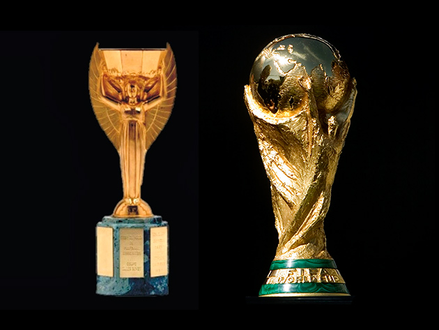

El torneo más grande del mundo
La Copa Mundial de la FIFA es el torneo de fútbol más importante del planeta. Se celebra cada cuatro años y reúne a las mejores selecciones nacionales del mundo.
Desde su primera edición en Uruguay en 1930, el torneo ha crecido de 13 a 48 selecciones participantes.
23Ediciones
48Equipos 2026
8Campeones
5Títulos Brasil

El trofeo más codiciado del fútbol
📋 Ediciones del Mundial
| # | Año | País Sede | Campeón | Logo |
|---|